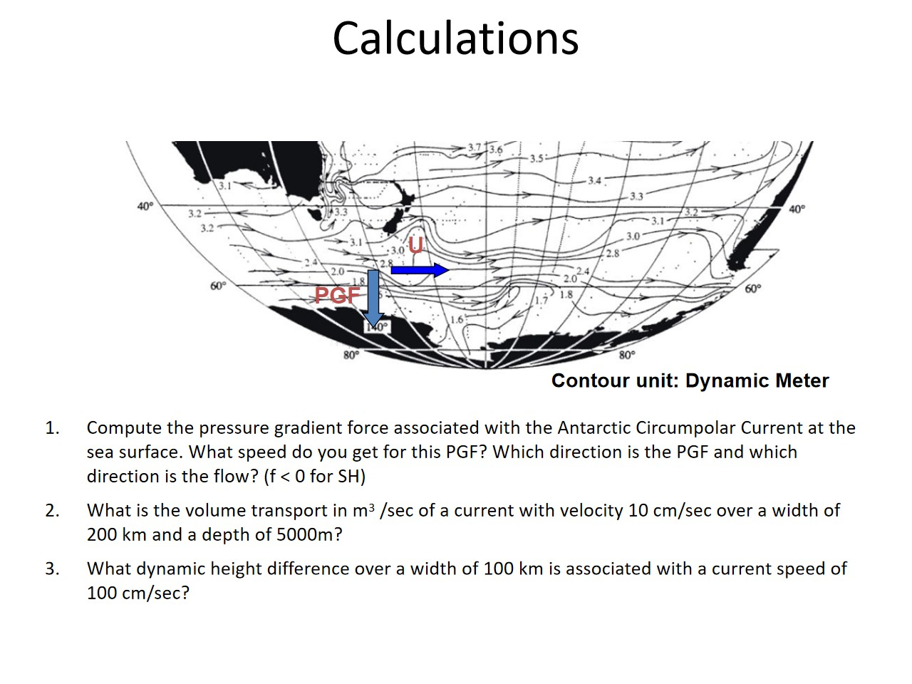

动力米不是普通的米
图中 dynamic meter（dyn m）是位势差单位：\(1 \mathrm{dyn} m = 10 m^{2}/s^{2}\)，约对应 \(10/g \approx 1.02 m\) 的高度差。以下 D 表示以动力米计的数值，\(\Phi =10D\) 为 SI 位势异常。现代 TEOS-10 工具返回 \(m^{2}/s^{2}\)，不能再无条件乘10。
取 x 向东、y 向北、z 向上；\(\Omega =7.292115\times 10^{-5} s^{-1}\)，\(f=2\Omega \sin \varphi \)。\(\mathrm{PGF}\) 在这里指单位质量压力梯度力，即加速度，单位 \(N/\mathrm{kg}=m/s^{2}\)。

课堂原图，由你提供；点击查看完整尺寸，手机可在图内横向滑动。
1. 南极绕极流：先判方向，再估算速度
Compute the pressure gradient force associated with the Antarctic Circumpolar Current at the sea surface. What speed do you get for this \(\mathrm{PGF}\)? Which direction is the \(\mathrm{PGF}\) and which direction is the flow? (\(f < 0\) for SH)
计算南极绕极流海表的压力梯度力，并求对应流速。\(\mathrm{PGF}\) 与洋流分别朝什么方向？南半球 \(f<0\)。
\(\mathrm{PGF}\) 向南、指向南极；地转流向东。示例取 \(\Delta D=1 \mathrm{dyn} m\)、距离1000 km、纬度60°S，得到 \(|\mathrm{PGF}|=10^{-5} m/s^{2}\)，流速约\(7.9 \mathrm{cm}/s\)。
图中动力高度总体北高南低，所以 \(\partial D/\partial y>0\)。压力梯度力从高值指向低值，向南。南半球 \(f<0\)，\(u=-10D_{y}/f>0\)，故洋流向东。向东流的科里奥利力在南半球指向左侧，也就是向北，与 \(\mathrm{PGF}\) 平衡。
图片没有指定哪两条等值线之间的实际距离，不能得到唯一精确数值。下列是课堂计算示例，不是从地图精确数字化得到的观测。取跨流高度差1 dyn m、宽度\(10^{6} m\)，\(|\mathrm{PGF}|=10/10^{6}=10^{-5} m/s^{2}\)；60°S 的 \(f=-1.263\times 10^{-4} s^{-1}\)，因此 \(U=|\mathrm{PGF}|/|f|=0.0792 m/s\)。
这里的水平压力梯度是在同一水平面上比较近表层水体，并非沿自由海面的大气压力变化。若动力高度相对于某深层参考面计算，则速度也是相对于该参考层；求绝对速度还需参考流速。
调整示例取值
高度差取北侧减南侧为正；输出为地转教学模型。赤道 \(f=0\) 时不计算速度。
2. 体积输运：速度乘以过流面积
What is the volume transport in \(m^{3}/\mathrm{sec}\) of a current with velocity \(10 \mathrm{cm}/\mathrm{sec}\) over a width of 200 km and a depth of 5000m?
速度\(10 \mathrm{cm}/s\)，宽度200 km，深度5000 m 的洋流，体积输运是多少？
\(Q=1.0\times 10^{8} m^{3}/s=100 \mathrm{Sv}\)。假设流速均匀，且垂直于矩形过流断面。
先换成 SI 单位：\(10 \mathrm{cm}/s=0.10 m/s\)，\(200 \mathrm{km}=2.0\times 10^{5} m\)。断面面积为 \(WH=10^{9} m^{2}\)，所以 \(Q=UWH=0.10\times 2.0\times 10^{5}\times 5000=10^{8} m^{3}/s\)。\(1 \mathrm{Sv}=10^{6} m^{3}/s\)。
这是题设下的均匀断面结果，不是对真实南极绕极流输运的独立观测估计。实际流速随位置和深度变化时，应积分断面的法向速度：\(Q=\iint U_\perp\,\mathrm dA\)。
3. 反推动力高度差：必须指定纬度
What dynamic height difference over a width of 100 km is associated with a current speed of \(100 \mathrm{cm}/\mathrm{sec}\)?
宽度100 km、流速\(100 \mathrm{cm}/s\)，对应多大的动力高度差？
通式 \(|\Delta D|=|f|UL/10\)。若采用 \(|f|=10^{-4} s^{-1}\)，答案约1 dyn m；题目未给纬度，因此不是唯一数值。
\(U=100 \mathrm{cm}/s=1 m/s\)，\(L=100 \mathrm{km}=10^{5} m\)。由 \(U=10|\Delta D|/(|f|L)\)，得到 \(|\Delta D|=10^{4}|f| \mathrm{dyn} m\)。这是差值的大小；高低侧的方向还需结合半球和流向判断。
| 代表纬度 | 动力高度差 / dyn m | 等效高度差 / m |
|---|---|---|
| 30° | 0.729 | 0.743 |
| 45° | 1.031 | 1.051 |
| 60° | 1.263 | 1.287 |
计算不同纬度需要的高度差
赤道不使用这一常规地转反演；不能把形式上的零高度差解释为任意赤道流的动力学。
图片二：从密度观测推到湾流速度
四幅图是一条计算链：密度 → 比容异常 → 动力高度 → 相对地转流速。参考层取3000 m，并假定该层无运动。

课堂原图，由你提供；点击查看完整尺寸，手机可在图内横向滑动。
这是一条约66°W、1997年的湾流断面。下文只读原图所表达的关系，不把图片当成可下载的精密原始数值资料。A 为红色南侧站，B 为蓝色北侧站；横向距离向右总体向北，所有纵轴深度向下增加。
（a）密度断面：等密度线为何倾斜？
26.0、27.0、27.8 等按通常标注表示位密度异常 \(\sigma_\theta=\rho_\theta-1000\)；例如26.0对应约\(1026 \mathrm{kg}/m^{3}\)，而不是密度仅\(26 \mathrm{kg}/m^{3}\)。黑色区域为海底地形，颜色辅助识别水层，定量读数看等密度线。
上层等密度线向右上方抬升：同一密度面在A较深、B较浅。同一深度比较，A侧较轻，B侧较重。这种水平密度梯度决定地转流的垂向切变，而不能单独给出绝对流速。
（b）比容异常：密度的倒数差
比容 \(\alpha =1/\rho \)；比容异常 \(\delta =\alpha -\alpha_{\mathrm{ref}}\)，与同一压力下选定的标准海水比较。横轴单位为\(10^{-8} m^{3}/\mathrm{kg}\)。它不是密度异常，两者变化方向相反。
上层红色A曲线在蓝色B曲线右侧，故 \(\delta_A>\delta_B\)，与A侧较轻相符。深层两线几乎重合，表示比容差小。差异明显的水层主要位于上层海洋。
（c）动力高度：沿水柱累积比容差
\(\Phi(p)=\int_p^{p_r}\delta\,\mathrm dp\)，压力用Pa时单位为\(m^{2}/s^{2}\)，\(D=\Phi /10\)转为动力米。两站动力高度差等于两站比容异常差的压力积分，因此它反映一整段水柱的累积影响。
上层A的比容异常较大，向上积分后\(D_A>D_B\)，红蓝两线在表层的间距较大。约3000 m两站动力高度均为零，是积分参考定义；参考层以下出现负值并不表示负海面高度，也不直接决定流向。
（d）地转流速：两站高度差除以站距
A在南、B在北，\(f>0\)；\(u_{\mathrm{rel}}=-\frac{10}{f}\frac{D_B-D_A}{y_B-y_A}\)。\(D_A>D_B\)使\(u>0\)，即向东。这里南侧A为较高动力高度侧，\(\mathrm{PGF}\)向北；向东流的科里奥利力向南。
黑线表层约\(90\text{–}100 \mathrm{cm}/s\)，随深度增加减弱，参考层附近接近零。以图上估读\(\Delta D\approx 0.7 \mathrm{dyn} m\)、站距≈80 km、纬度≈39°N，可算\(u\approx 0.95 m/s\)，与速度图的量级相符；估读值不是精密观测数表。
最重要的限制：3000 m无运动是参考假设，不是密度观测证明的事实。若参考地转速度实际为\(u_{r}\)，则应将\(u_{r}\)加到整条相对速度剖面；同一密度场可以对应相同切变、不同绝对流速。
参考资料与配套作业
- Talley et al. · Supplementary Chapter S7, Figure S7.20
- Talley · SIO 210 Lecture 4: dynamic height, geostrophy and transport
- TEOS-10 · Dynamic height anomaly (SI units)